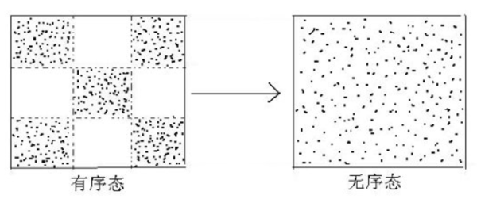
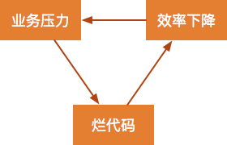
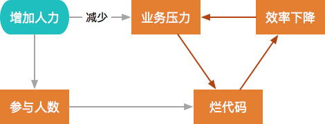
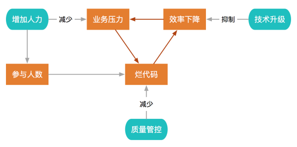
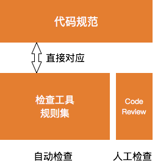
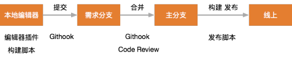

本文讨论的代码质量指的是代码本身的质量 , 包括复杂度 , 重复率 , 代码风格等要素 ; 代码是团队的共同财产 , 代码质量是团队技术水平和管理水平的直接体现 ;
代码质量下降通常会自成因果 , 导致恶性循环 :
本文会分析代码质量下降的内在机制 , 并分享在代码质量管控方面的一些实践经验 ;
熵增定律告诉我们 , 一个封闭系统总是趋向于熵增 , 也就是系统的无序程度只会不断增加 ;

对于软件项目来说 , 代码质量代表着系统的有序程度 , 烂代码增加就是系统无序性上升的体现 ; 在无外力影响的情况下 , 烂代码只会原来越多 ;
为了维持系统有序 , 需要外界向系统不断输入能量 ; 对于代码质量 , 我们需要主动投入资源 , 来有意识地抑制烂代码越来越多的自然趋势 ;
烂代码产生的常见原因是业务压力大 , 导致没有时间或意愿讲究代码质量 ; 因为向业务压力妥协而生产烂代码之后 , 开发效率会随之下降 , 导致业务压力更大 , 形成一种典型的恶性循环 ;

为了应对业务压力 , 常见的做法就是向项目中增加人力 , 但是单纯地增加人力的话 , 会因为风格不一致 , 沟通成本上升等原因导致烂代码更多 ;

要遏制这种恶性循环 , 需要多管齐下 , 主动对代码质量进行管控 , 并且持续进行技术升级 , 系统性地解决问题 ;

不过质量管控和技术升级需要长期投入才能产生效果 ; 通常情况下人们还是倾向于通过增加人力快速地解决业务压力的问题 , 而忽略了对于代码质量的负面影响 , 导致代码质量越来越差 ;
我把代码质量管控通常需要经历的四个阶段 , 称之为 四个现代化 :
保障代码质量的基础是建立团队的代码规范 , 通常包括 ;
团队的代码规范通常以文档的形式存在 , 供新人们学习 ; 但文档这种形式常见的情况就是新人看过之后就不再回顾了 , 也很难对实际写代码形成真正的约束 ;
在规范的基础上 , 要通过Code Review将规范落地 ; Code Review中大家可以对代码质量问题进行交流 , 并且相互监督 , 形成团队重视代码的习惯 ;
关于Code Review可以参考另一篇文章 ; Code Review体系与团队文化 https://zhuanlan.zhihu.com/zhangxin840
自动化是指在代码规范的基础上 , 使用自动化工具进行质量检查 , 通常包括 :
自动化质量检查可以覆盖多数常见问题 , 能够提升开发效率 , 也可以降 低人工 Code Review 的成本 ;

自动化检查工具的规则集与代码规范直接对应 ; 通过编辑器插件 , 在写代码的时候直接给出检查结果 ; 到这个阶段 , 团队的代码规范文档已经不再需要陈述各种细节 , 开发者可以直接通过查看自动化工具的规则集来了解代码规范 ;
流程化的意思是将自动化代码质量检查和 Code Review 与代码流动的过程绑定 , 从而保证所有上线的代码都经过机器与人工多个环节的检查 ;
代码流动过程 :
执行自动化代码质量检查的时机 :
质量检查与代码流动绑定后的效果 :

除了人工的 Code Review 之外 , 各个环节的代码质量检查都是机器自动运行的 , 不会给开发者带来额外的成本 ;
当团队规模越来越大 , 项目越来越多时 , 代码质量管控就会面临以下问题 :
为了应对以上问题 , 需要建设中心化的代码质量管控体系 , 要点包括 :
在面临业务压力时 , 人们通常会倾向于通过增加人力来缓解业务压力 ; 但从系统整体的角度来看 , 人力增加会造成代码质量变差 , 开发效率下降 , 从而再度增大业务压力 ; 这种代码质量越来越差的循环 , 是熵增定律在软件工程领域的生动体现 ;
为了抑制这种循环 , 我们需要有意识地投入资源来建设代码质量的管控体系 ; 这个过程分为四个阶段 : 规范化 , 自动化 , 流程化 , 中心化 ; 每个阶段都有不同关注的要点 ;